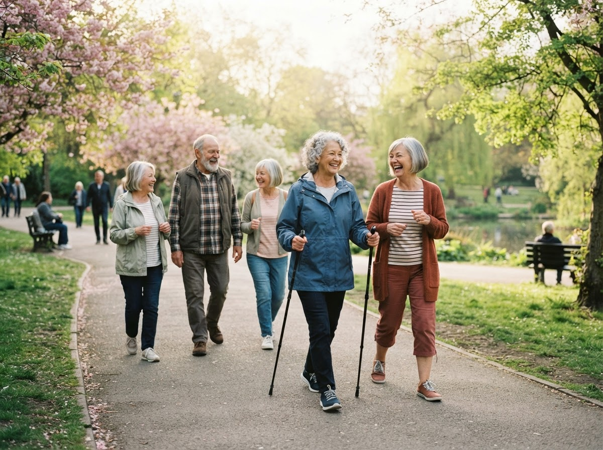

Community
A West End church turned its basement into a free gym. Two hundred neighbours now train there every week
Rowers, kettlebells and a Thursday prayer circle: how St. Anne’s made fitness the front door to its parish.
Component · Data display
Stories are how the news front page, a story and the newsletter present what was written: one lead, headlines, a river, a ranked list, cards and the story itself.
One family of blocks shows stories at different weights. Pick the form by how much attention the story should get and how much room there is:
.story-lead): the single most important story, on the front page's Latest view only, with a 16:9 photo, its section, a large headline, the dek and the byline..headline-list, .headline): the next four stories beside the lead under a 2px ink rule; small thumbnails. --plain drops the rule where a rule title already heads the list (the newsletter's "Worth your time")..top-stories): the lead and the headline list together, two columns from 1024px..river, .story-row): the newest stories in order, each a row with section and age, headline, dek and author, and a 4:3 photo on the right. Used for "The latest" and for a section's page..ranked): "Most read", numbered in italic display numerals, each title a link to its story. Rail only..news, .rail): the river and the rail (Join card, upcoming events, newsletter box, most read) side by side from 1024px. --flush drops the top border when there are no top stories above it (section pages, empty and error states)..story): one story to read: head (back link, section, title, dek, byline with Copy link), figure, body with pull quotes..story-next): the one next step a story points to: an event to register for or a listing to visit. Only when the story has one..story-more, .story-card): three cards after a story, same section first.Headlines are links (.story-link) inside headings; the photo, section and meta around them are not. Only the story card and story next are whole-block links, because they hold no other content.
Community · Yesterday
It started with three women from Grace Fellowship and a pair of borrowed poles.

.story__section in 14px accent semibold; .story__ago in muted regular..story-link; underlines on hover..story-row__dek, muted, relaxed line height; hidden below 640px..story__meta: author, and age where the section line does not carry it; strong bolds the author in the lead.alt=""), cropped with object-fit: cover, square corners as in print.Community
Rowers, kettlebells and a Thursday prayer circle: how St. Anne’s made fitness the front door to its parish.


h1 on that page) and four headlines with thumbnails. Two columns from 1024px.<section class="top-stories" aria-label="Top stories, example"><article class="story-lead"><img class="story-lead__image" src="../../mocks/assets/images/church-gym.jpg" alt="" width="1376" height="768"><p class="story__section story-lead__section">Community</p><h2 class="story-lead__title"><a class="story-link" href="#top">A West End church turned its basement into a free gym. Two hundred neighbours now train there every week</a></h2><p class="story-lead__dek">Rowers, kettlebells and a Thursday prayer circle: how St. Anne’s made fitness the front door to its parish.</p><p class="story__meta story-lead__meta"><strong>Naomi Clarke</strong> · 2 hours ago</p></article><ul class="headline-list"><li class="headline"><div class="headline__body"><p class="story__section">Events</p><h3 class="headline__title"><a class="story-link" href="#top">Easter Sunrise 5K hits a record 142 sign-ups with ten days to go</a></h3><p class="story__meta">CF Team · 4 hours ago</p></div><img class="headline__image" src="../../mocks/assets/images/run.jpg" alt="" width="1376" height="768"></li><li class="headline"><div class="headline__body"><p class="story__section">Pros</p><h3 class="headline__title"><a class="story-link" href="#top">Danielle Okafor on coaching strength without the shame</a></h3><p class="story__meta">Marcus Bell · 6 hours ago</p></div><img class="headline__image" src="../../mocks/assets/images/coach.jpg" alt="" width="1200" height="896"></li><li class="headline"><div class="headline__body"><p class="story__section">Nutrition</p><h3 class="headline__title"><a class="story-link" href="#top">Inside the Scarborough kitchen prepping 300 healthy meals a week for shift workers</a></h3><p class="story__meta">Priya Raman · 9 hours ago</p></div><img class="headline__image" src="../../mocks/assets/images/meal-prep.jpg" alt="" width="1200" height="896"></li><li class="headline"><div class="headline__body"><p class="story__section">Faith & Body</p><h3 class="headline__title"><a class="story-link" href="#top">Why your rest day might be the most spiritual part of your training plan</a></h3><p class="story__meta">Pastor Ruth Adeyemi · 11 hours ago</p></div><img class="headline__image" src="../../mocks/assets/images/stretch.jpg" alt="" width="1200" height="896"></li></ul></section>The latest
Events · Yesterday
Registration for the combined team opens May 1, with free training plans for first-time runners.

Community · Yesterday
It started with three women from Grace Fellowship and a pair of borrowed poles.
<div class="news"><section class="river" aria-label="Stories, example"><p class="display river__title">The latest</p><ul class="river__list"><li class="story-row"><div class="story-row__body"><p class="story__section">Events <span class="story__ago">· Yesterday</span></p><h3 class="story-row__title"><a class="story-link" href="#top">Twelve GTA churches will run the Toronto Half as one team this fall</a></h3><p class="story-row__dek">Registration for the combined team opens May 1, with free training plans for first-time runners.</p><p class="story__meta">Naomi Clarke</p></div><img class="story-row__image" src="../../mocks/assets/images/marathon.jpg" alt="" width="1200" height="896"></li><li class="story-row"><div class="story-row__body"><p class="story__section">Community <span class="story__ago">· Yesterday</span></p><h3 class="story-row__title"><a class="story-link" href="#top">The Tuesday walking group that got 40 seniors off the couch and into the park</a></h3><p class="story-row__dek">It started with three women from Grace Fellowship and a pair of borrowed poles.</p><p class="story__meta">Priya Raman</p></div><img class="story-row__image" src="../../mocks/assets/images/seniors-walk.jpg" alt="" width="1200" height="896"></li></ul></section><aside class="rail" aria-label="Most read, example"><section><p class="display rule-title">Most read</p><ol class="ranked"><li><span class="ranked__n" aria-hidden="true">1</span><p class="ranked__title"><a href="#">Why your rest day might be the most spiritual part of your training plan</a></p></li><li><span class="ranked__n" aria-hidden="true">2</span><p class="ranked__title"><a href="#">A beginner’s guide to your first outdoor bootcamp</a></p></li><li><span class="ranked__n" aria-hidden="true">3</span><p class="ranked__title"><a href="#">Twelve GTA churches will run the Toronto Half as one team this fall</a></p></li><li><span class="ranked__n" aria-hidden="true">4</span><p class="ranked__title"><a href="#">Fasting and training: what a dietitian wants you to know before Lent</a></p></li><li><span class="ranked__n" aria-hidden="true">5</span><p class="ranked__title"><a href="#">The Tuesday walking group that got 40 seniors into the park</a></p></li></ol></section></aside></div>Events
Events · 4 hours ago
Events · Yesterday
Registration for the combined team opens May 1, with free training plans for first-time runners.
.news--flush drops the top border; the river title is the page's h1.<ul class="headline-list headline-list--plain"><li class="headline"><div class="headline__body"><p class="story__section">Nutrition</p><h3 class="headline__title"><a class="story-link" href="#top">Inside the Scarborough kitchen prepping 300 healthy meals a week for shift workers</a></h3><p class="story__meta">Priya Raman · 9 hours ago</p></div><img class="headline__image" src="../../mocks/assets/images/meal-prep.jpg" alt="" width="1200" height="896"></li><li class="headline"><div class="headline__body"><p class="story__section">Faith & Body</p><h3 class="headline__title"><a class="story-link" href="#top">Why your rest day might be the most spiritual part of your training plan</a></h3><p class="story__meta">Pastor Ruth Adeyemi · 11 hours ago</p></div><img class="headline__image" src="../../mocks/assets/images/stretch.jpg" alt="" width="1200" height="896"></li></ul><ol> carries the order.<aside class="rail" aria-label="Most read, example"><section><p class="display rule-title">Most read</p><ol class="ranked"><li><span class="ranked__n" aria-hidden="true">1</span><p class="ranked__title"><a href="#">Why your rest day might be the most spiritual part of your training plan</a></p></li><li><span class="ranked__n" aria-hidden="true">2</span><p class="ranked__title"><a href="#">A beginner’s guide to your first outdoor bootcamp</a></p></li><li><span class="ranked__n" aria-hidden="true">3</span><p class="ranked__title"><a href="#">Twelve GTA churches will run the Toronto Half as one team this fall</a></p></li><li><span class="ranked__n" aria-hidden="true">4</span><p class="ranked__title"><a href="#">Fasting and training: what a dietitian wants you to know before Lent</a></p></li><li><span class="ranked__n" aria-hidden="true">5</span><p class="ranked__title"><a href="#">The Tuesday walking group that got 40 seniors into the park</a></p></li></ol></section></aside>Community
Rowers, kettlebells and a Thursday prayer circle: how St. Anne’s made fitness the front door to its parish.
On a Tuesday night in March, the basement of St. Anne’s Anglican on Gladstone Avenue smells like rubber flooring and coffee. Eleven rowers hum along one wall. A woman in her seventies is deadlifting a kettlebell under the eye of a volunteer coach, and a teenager is filming his first pull-up for his mother.
Two years ago this room held stacked chairs and a broken ping-pong table. Then Rev. Thomas Mbeki asked his congregation a question he says he was half-embarrassed to ask: what would it look like if the church cared about bodies as much as it said it did?
In the directoryFind church sports ministries near you“We talk about the body as a temple every Sunday. I wanted a room where we actually looked after one.”
Spotted a mistake? Send a correction
h1.)<article class="story"><header class="story__head"><a class="back-link" href="#top"><svg class="icon" viewBox="0 0 24 24" aria-hidden="true"><path d="m12 19-7-7 7-7"/><path d="M19 12H5"/></svg> All stories</a><p class="story__section story__kicker">Community</p><h2 class="story__title">A West End church turned its basement into a free gym. Two hundred neighbours now train there every week</h2><p class="story__dek">Rowers, kettlebells and a Thursday prayer circle: how St. Anne’s made fitness the front door to its parish.</p><div class="story__byline"><div class="story__byline-body"><p class="story__author">Naomi Clarke</p><p class="story__when">2 hours ago · 6 min read</p></div><button class="btn btn--secondary btn--sm" type="button"><svg class="icon" viewBox="0 0 24 24" aria-hidden="true"><path d="M9 17H7A5 5 0 0 1 7 7h2"/><path d="M15 7h2a5 5 0 1 1 0 10h-2"/><line x1="8" x2="16" y1="12" y2="12"/></svg>Copy link</button><p class="visually-hidden" role="status"></p></div></header><figure class="story__figure"><img class="story__image" src="../../mocks/assets/images/church-gym.jpg" alt="" width="1376" height="768"></figure><div class="story__body"><p>On a Tuesday night in March, the basement of St. Anne’s Anglican on Gladstone Avenue smells like rubber flooring and coffee. Eleven rowers hum along one wall. A woman in her seventies is deadlifting a kettlebell under the eye of a volunteer coach, and a teenager is filming his first pull-up for his mother.</p><p>Two years ago this room held stacked chairs and a broken ping-pong table. Then Rev. Thomas Mbeki asked his congregation a question he says he was half-embarrassed to ask: what would it look like if the church cared about bodies as much as it said it did?</p><blockquote class="story__quote"><p>“We talk about the body as a temple every Sunday. I wanted a room where we actually looked after one.”</p></blockquote><a class="story-next" href="#top"><span class="story-next__body"><span class="story-next__label">In the directory</span><span class="story-next__title">Find church sports ministries near you</span></span><svg class="icon icon--lg story-next__arrow" viewBox="0 0 24 24" aria-hidden="true"><path d="M5 12h14"/><path d="m12 5 7 7-7 7"/></svg></a><p class="story__correct"><svg class="icon" viewBox="0 0 24 24" aria-hidden="true"><path d="M21 15a2 2 0 0 1-2 2H7l-4 4V5a2 2 0 0 1 2-2h14a2 2 0 0 1 2 2z"/><path d="M12 7v2"/><path d="M12 13h.01"/></svg> Spotted a mistake? <a class="link" href="#top">Send a correction</a></p></div></article><a class="story-next" href="#top"><span class="story-next__body"><span class="story-next__label">From this story</span><span class="story-next__title">Register for the Easter Sunrise 5K</span></span><svg class="icon icon--lg story-next__arrow" viewBox="0 0 24 24" aria-hidden="true"><path d="M5 12h14"/><path d="m12 5 7 7-7 7"/></svg></a><a class="story-next" href="#top"><span class="story-next__body"><span class="story-next__label">In the directory</span><span class="story-next__title">Find church sports ministries near you</span></span><svg class="icon icon--lg story-next__arrow" viewBox="0 0 24 24" aria-hidden="true"><path d="M5 12h14"/><path d="m12 5 7 7-7 7"/></svg></a><section class="story-more" aria-label="Keep reading, example"><div class="story-more__inner"><p class="display river__title">Keep reading</p><ul class="story-more__list"><li><a class="story-card" href="#top"><img class="story-card__image" src="../../mocks/assets/images/seniors-walk.jpg" alt="" width="1200" height="896"><span class="story__section story-card__section">Community</span><span class="story-card__title">The Tuesday walking group that got 40 seniors off the couch and into the park</span><span class="story__meta">Priya Raman · Yesterday</span></a></li><li><a class="story-card" href="#top"><img class="story-card__image" src="../../mocks/assets/images/run.jpg" alt="" width="1376" height="768"><span class="story__section story-card__section">Events</span><span class="story-card__title">Easter Sunrise 5K hits a record 142 sign-ups with ten days to go</span><span class="story__meta">CF Team · 4 hours ago</span></a></li><li><a class="story-card" href="#top"><img class="story-card__image" src="../../mocks/assets/images/coach.jpg" alt="" width="1200" height="896"><span class="story__section story-card__section">Pros</span><span class="story-card__title">Danielle Okafor on coaching strength without the shame</span><span class="story__meta">Marcus Bell · 6 hours ago</span></a></li></ul></div></section>| Form | Title (phone → 640px) | Image | Heading level |
|---|---|---|---|
Story page title .story__title | --font-size-3xl → 4xl, bold | 16:9, up to 64rem | h1 |
Lead .story-lead__title | --font-size-3xl → 4xl, bold | 16:9, column width | h1 on Latest |
Story row .story-row__title | --font-size-xl → 2xl, bold | 4:3, 7rem → 14rem | h3 under the river's h2 |
Headline .headline__title | --font-size-lg, bold | 5rem square | h2 on the front page, h3 in an issue |
Story card .story-card__title | --font-size-lg, bold | 16:10, card width | none: the card is a link |
Story next .story-next__title | --font-size-lg, bold | none | none: the card is a link |
Ranked .ranked__title | --font-size-md, semibold; numeral --font-size-3xl | accent, underlined | none |
Story links underline on hover and show the shared focus ring. Only .story-next has a data-state="hover" hook; headline links and story cards are hover-styled through :hover alone, so their hover cannot be shown statically here (see sources). Nothing disables: an unavailable story is the not-found page.
| Variant | Default | Hover | Focus |
|---|---|---|---|
| Story next | In the directoryFind church sports ministries near you | In the directoryFind church sports ministries near you | In the directoryFind church sports ministries near you |
| Headline link | — | ||
| Story card | — | ||
| Copy link |
<div class="story__byline"><div class="story__byline-body"><p class="story__author">Naomi Clarke</p><p class="story__when">2 hours ago · 6 min read</p></div><button class="btn btn--secondary btn--sm" type="button"><svg class="icon" viewBox="0 0 24 24" aria-hidden="true"><path d="M20 6 9 17l-5-5"/></svg>Link copied</button><p class="visually-hidden" role="status">Link copied</p></div>Loading stories
<div aria-busy="true" aria-live="polite"><p class="visually-hidden">Loading stories</p><ul class="river__list"><li class="story-row"><div class="story-row__body skeleton-stack"><span class="skeleton skeleton--text-sm w-30"></span><span class="skeleton skeleton--title"></span><span class="skeleton skeleton--text w-80"></span></div><span class="skeleton skeleton--tile"></span></li><li class="story-row"><div class="story-row__body skeleton-stack"><span class="skeleton skeleton--text-sm w-30"></span><span class="skeleton skeleton--title"></span><span class="skeleton skeleton--text w-80"></span></div><span class="skeleton skeleton--tile"></span></li></ul></div>Training
No stories in Training yet this week.
<div class="river"><p class="display river__title">Training</p><p class="river__empty">No stories in Training yet this week.</p></div><aside class="rail" aria-label="Upcoming events, empty example"><p class="rail__empty">No events posted yet. Check back soon.</p></aside>The latest
Stories didn't load.
Check your connection, then try again.
<div class="river"><p class="display river__title">The latest</p><div class="inline-error" role="alert"><svg class="icon" viewBox="0 0 24 24" aria-hidden="true"><circle cx="12" cy="12" r="10"/><line x1="12" x2="12" y1="8" y2="12"/><line x1="12" x2="12.01" y1="16" y2="16"/></svg><div class="inline-error__body"><p class="inline-error__title">Stories didn't load.</p><p>Check your connection, then try again.</p><button type="button">Try again</button></div></div></div>The latest
Events · Yesterday
Registration for the combined team opens May 1, with free training plans for first-time runners.
The latest
Events · Yesterday
Registration for the combined team opens May 1, with free training plans for first-time runners.
--space-0-5 offset); story next deepens to --color-accent-subtle-hover.role="status" region, not just the changed label.--layout-breakpoint-sm): side padding 24px; lead and story titles grow to --font-size-4xl, row titles to 2xl; the row photo grows to 14rem and the dek shows; row gap 32px.--layout-breakpoint-lg): top stories become 1.75fr / 1fr; the news layout becomes river / 21.25rem rail, and the rail sticks under the masthead (top: 2 × --layout-topbar-height).--layout-measure (42rem), the head at 48rem and the figure at 64rem, all centred.min-width: 0, so long headlines wrap (text-wrap: pretty) instead of widening the page.Stories sit on the site surface --color-bg-surface. Sections, ranked numerals, the story-next label and arrow read --color-fg-accent; deks, meta, ages and the correction line --color-fg-muted; headlines --color-fg-default. Rules are --color-fg-default at 2px (headline list, Keep reading) or --color-border-default hairlines between items. Story next fills --color-accent-subtle, hover --color-accent-subtle-hover; the pull quote's bar is --color-accent. Photos are unchanged in dark theme.
Lists of stories are <ul> (<ol> for Most read); each headline is a real heading holding one link, so heading navigation lists the stories and the link name is the headline alone. The lead is an <article>; the story page is an <article> with a <header>. Pull quotes are <blockquote>. Story cards and story next are single links with no nested controls.
| Key | Action |
|---|---|
| Tab | Moves from headline link to headline link; on a story page: All stories, Copy link, links in the text, story next, Send a correction, then the cards. |
| Enter | Opens the story, or follows story next. |
| Enter / Space | On Copy link: copies the story's address; the status region says "Link copied". |
The shared 2px --color-focus-ring at 2px offset. Square-cornered blocks (cards, story next) take a square ring.
Photos are decorative (alt="") because the headline says what the story is. Ranked numerals are aria-hidden; the ordered list announces position. The section landmarks are named: "Top stories", "Stories", "Keep reading". The page's h1 is the lead headline on Latest, the section name on a section page, and the story's title on a story.
Story next's fill changes over --duration-fast; reduced motion zeroes it. Underlines appear without animation.
Headline links are the full headline, at least two lines of 18px or larger type in practice, so well over 24px tall. Story cards and story next are large single targets. Copy link is a small button (36px); give it 8px of space from its neighbours.
Events · Yesterday
Registration for the combined team opens May 1, with free training plans for first-time runners.
<ol>; the italic numerals are decoration.Why your rest day might be the most spiritual part of your training plan
A beginner’s guide to your first outdoor bootcamp
<ul> with visible numerals read aloud: the order is in the text, not the structure.| Part | Token | Light | Dark |
|---|---|---|---|
| Section, ranked numeral, story-next label | --color-fg-accent | ||
| Dek, meta, age | --color-fg-muted | ||
| Headline, ink rules | --color-fg-default | ||
| Hairlines | --color-border-default | ||
| Story next / hover | --color-accent-subtle / --color-accent-subtle-hover | ||
| Pull quote bar | --color-fg-accent | ||
| Title sizes | --font-size-lg / --font-size-xl / --font-size-2xl / --font-size-3xl / --font-size-4xl | / / / / | |
| Line heights | --line-height-tight / --line-height-snug / --line-height-relaxed | / / | |
| Rules | --border-width-hairline / --border-width-thick | / | |
| Container, measure | --layout-container-max / --layout-measure | / | |
| Rail offset | --layout-topbar-height | ||
| Gaps | --space-4 / --space-5 / --space-8 / --space-10 / --space-12 | / / / / | |
| Ranked numeral font | --font-family-display | ||
| Transition | --duration-fast / --ease-standard | / | |
<section class="top-stories" aria-label="Top stories">
<article class="story-lead">
<img class="story-lead__image" src="church-gym.jpg" alt="" width="1376" height="768">
<p class="story__section story-lead__section">Community</p>
<h1 class="story-lead__title"><a class="story-link" href="/stories/basement-gym">A West End church turned its basement…</a></h1>
<p class="story-lead__dek">Rowers, kettlebells and a Thursday prayer circle…</p>
<p class="story__meta story-lead__meta"><strong>Naomi Clarke</strong> · 2 hours ago</p>
</article>
<ul class="headline-list">
<li class="headline">
<div class="headline__body">
<p class="story__section">Events</p>
<h2 class="headline__title"><a class="story-link" href="…">Easter Sunrise 5K hits a record 142 sign-ups…</a></h2>
<p class="story__meta">CF Team · 4 hours ago</p>
</div>
<img class="headline__image" src="run.jpg" alt="" width="1376" height="768">
</li>
</ul>
</section>
<div class="news">
<section class="river" aria-label="Stories">
<h2 class="display river__title">The latest</h2>
<ul class="river__list"><li class="story-row">…</li></ul>
</section>
<aside class="rail" aria-label="Join, events and newsletter">…<ol class="ranked">…</ol></aside>
</div>| Class / attribute | Effect |
|---|---|
.top-stories | Lead and headline list; 1.75fr / 1fr from 1024px. |
.story-lead __image __section __title __dek __meta | The lead story. |
.headline-list --plain | Headline stack under a 2px ink rule, or without it. |
.headline __body __title __image | One headline with a square thumbnail. |
.news --flush | River and rail; flush drops the top border. |
.river __title __list __empty | The story river, its heading and empty text. |
.story-row __body __title __dek __image | A river row. |
.rail __empty | The sticky side column and its empty text. |
.ranked __n __title | Most read. |
.story-link | A headline link: underline on hover. |
.story__section __ago __meta | Shared label and meta lines. |
.story __head __kicker __title __dek __byline __author __when __figure __image __body __quote __correct | The story page. |
.story-next __body __label __title __arrow | The one next step; data-state="hover" supported. |
.story-more __inner __list | Keep reading band. |
.story-card __image __section __title | A whole-card story link. |
Extracted from these mocks:
Drift fixed during extraction: Photos use square corners, as in the prototype's print style, rather than the app's --radius-xl. Closed: Most read titles (.ranked__title) are now links, so a reader can open a most-read story from the rail. .story-link and .story-card have no data-state="hover" hook, unlike .story-next (open).